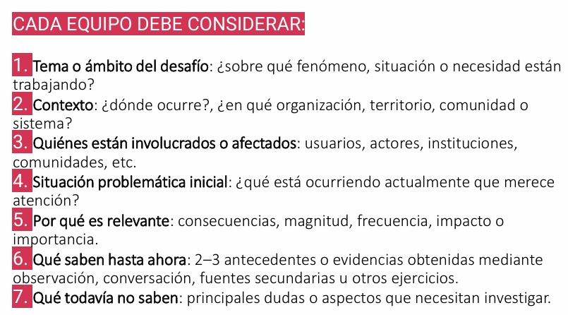

S05 - Construcción del pitch y profundización del problema
Fecha: 10-09-2026
Participantes: BENJAMÍN JARPA, SEBASTIÁN MEDALLA, CÉSAR OLIVARES, PABLO TRONCOSO
Responsable del registro: CÉSAR OLIVARES
Objetivo
Comprender los elementos principales de un pitch y aplicarlos en la elaboración de una presentación breve para el proyecto PluvioTech. Además, profundizar en la comprensión del problema mediante preguntas orientadoras y evaluar el desempeño individual y grupal de los integrantes.
Actividades realizadas
- Revisión de los elementos que componen un pitch efectivo, considerando la presentación del problema, las personas afectadas, la importancia de resolverlo y la propuesta de solución.
- Elaboración colaborativa de un pitch para el proyecto PluvioTech.
- Selección de uno de los integrantes del equipo como representante para presentar oralmente el pitch.
- Análisis del problema mediante las siguientes preguntas orientadoras:
- ¿Qué está ocurriendo?
- ¿A quién le ocurre?
- ¿Por qué importa?
- ¿Qué sabemos?
- ¿Qué creemos, pero aún no sabemos?
- ¿Qué necesitamos averiguar y todavía no sabemos?
- Elaboración de respuestas preliminares para cada una de las preguntas, con el objetivo de diferenciar la información conocida, los supuestos y los vacíos de información.
- Realización de una autoevaluación individual y una evaluación de los integrantes del equipo, considerando su participación y desempeño durante el trabajo.
Evidencias


Documento con las respuestas a las preguntas orientadoras
Resultados
- Se identificaron los elementos principales que debe contener un pitch para comunicar un proyecto de manera clara y breve.
- El equipo elaboró un pitch para PluvioTech, orientado a explicar el problema de los aluviones y la necesidad de modernizar el monitoreo comunitario en San José de Maipo.
- Se definió a un integrante como representante para presentar el discurso frente al curso o grupo de trabajo.
- Las preguntas orientadoras permitieron ordenar la información disponible sobre el desafío:
- Qué está ocurriendo: San José de Maipo tiene numerosas quebradas propensas a aluviones en masa tras eventos de lluvia. Existe una red comunitaria de observadores y pluviómetros artesanales, pero los datos se registran de forma manual, dispersa y poco integrada
- A quién le ocurre: Al observador comunitario / habitante de un sector expuesto a quebradas de aluvión en San José de Maipo
- Por qué importa: El monitoreo actual no puede escalar de forma sostenible a más quebradas ni observadores.
- Qué sabemos: Existe una necesidad de automatizar parte del monitoreo, integrar datos instrumentales con reportes ciudadanos y considerar la conectividad limitada del territorio.
- Qué creemos, pero aún no sabemos: Que es posible implementar sensores y comunicación básica en condiciones de conectividad limitada.
- Qué necesitamos averiguar: Se requiere conocer las necesidades concretas de los usuarios, las condiciones de conectividad, los protocolos de alerta existentes, los sensores más adecuados y los requisitos de las instituciones involucradas.
- La autoevaluación y evaluación grupal permitieron identificar fortalezas y aspectos de mejora relacionados con la comunicación, participación, responsabilidad y colaboración del equipo.
Decisiones y justificación
| Decisión | Evidencia o criterio | Consecuencia para el proyecto |
|---|---|---|
| Utilizar un pitch para comunicar el proyecto PluvioTech | El pitch permite presentar de forma breve el problema, su importancia y la solución propuesta | El equipo podrá explicar el proyecto de manera más clara ante docentes, instituciones y posibles colaboradores |
| Organizar el pitch a partir del problema, los usuarios y la solución | Las preguntas trabajadas ayudaron a ordenar la información y distinguir hechos de supuestos | La propuesta se enfocará primero en las necesidades de las personas y no únicamente en la tecnología |
| Mantener como usuario principal a la comunidad y a los observadores locales, considerando a las instituciones como actores relevantes | El problema afecta directamente a personas que viven o trabajan en sectores expuestos | El diseño deberá considerar facilidad de uso, comprensión de las alertas y condiciones reales de conectividad |
| Diferenciar lo que se sabe de lo que todavía debe investigarse | Se identificaron vacíos de información sobre usuarios, conectividad, sensores y protocolos de alerta | Las siguientes actividades deberán enfocarse en obtener evidencia y validar los supuestos |
| Realizar autoevaluación y evaluación entre integrantes | La evaluación permite reconocer el desempeño individual y mejorar la colaboración | Se podrán ajustar responsabilidades y formas de trabajo para las próximas sesiones |
Errores, dificultades o riesgos
- Al construir el pitch, pudo resultar difícil resumir un problema amplio y técnico en un mensaje breve y comprensible.
- Existe el riesgo de presentar como hechos algunos aspectos que todavía son supuestos, especialmente las necesidades de los usuarios y la disposición de la comunidad a utilizar la solución.
- La información disponible sobre las condiciones reales de conectividad, los protocolos de alerta y el funcionamiento de los observadores comunitarios aún es limitada.
- Para corregir estas dificultades, se deberán validar las respuestas mediante investigación documental, contacto con instituciones y, si es posible, entrevistas o consultas a usuarios relacionados con el problema.
Aprendizajes
- Un pitch debe comunicar de manera breve y ordenada el problema, las personas afectadas, la importancia de resolverlo y la propuesta de solución.
- No toda la información considerada por el equipo tiene el mismo nivel de certeza; es necesario distinguir entre datos comprobados, creencias y preguntas pendientes.
- Las preguntas orientadoras ayudan a profundizar la fase de empatía y definición del Design Thinking.
- La solución no debe diseñarse únicamente desde el punto de vista técnico, sino considerando la experiencia y las necesidades de los usuarios.
- La autoevaluación y la evaluación entre pares permiten reconocer el aporte de cada integrante y detectar oportunidades de mejora en el trabajo colaborativo.
Tareas y responsables
| Tarea | Responsable(s) | Fecha límite | Estado |
|---|---|---|---|
| Organizar y subir al repositorio el pitch y sus evidencias | CÉSAR OLIVARES | 18-09-2026 | Pendiente |
| Investigar las condiciones de conectividad y monitoreo en San José de Maipo | SEBASTIÁN MEDALLA, PABLO TRONCOSO | 18-09-2026 | Pendiente |
| Identificar instituciones o personas que puedan aportar información sobre el problema | BENJAMÍN JARPA | 18-09-2026 | Pendiente |
Próximo paso
El próximo paso será validar los supuestos identificados durante la sesión y profundizar en las necesidades de los usuarios y actores involucrados. Para ello, el equipo deberá investigar documentos disponibles, buscar posibles contactos institucionales y revisar las condiciones técnicas y sociales de la solución.
La evidencia esperada será:
- Un documento que diferencie hechos, supuestos y preguntas pendientes.
- Un registro de fuentes o contactos consultados.
- Una definición más precisa del usuario y del problema.
Fuentes consultadas
- SERNAGEOMIN, “Modernización de la Red Comunitaria de Observadores y Pluviómetros Ciudadanos para la Gestión del Riesgo de Aluviones en San José de Maipo”, documento base del proyecto.
- Material de clases sobre elaboración y presentación de pitch.
- Material de clases sobre Design Thinking, comprensión del problema y definición de usuarios.
- Pauta de autoevaluación y evaluación del trabajo en equipo.